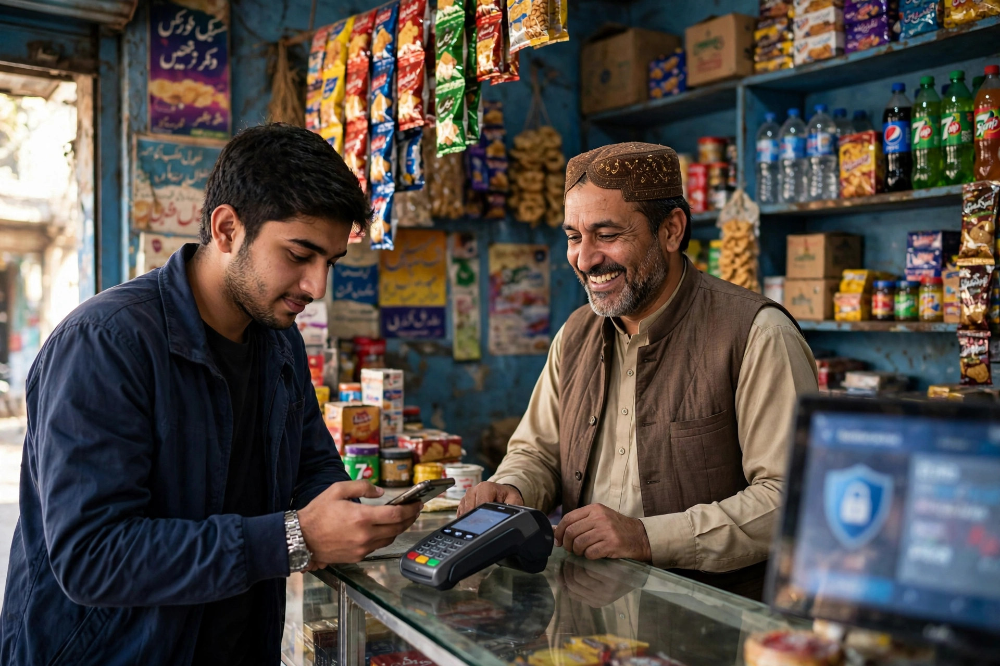

Before a visitor reads a single word on your website, their browser has already formed a first impression. If the address bar shows a reassuring padlock, the visitor relaxes. If it shows a warning saying the site is not secure, many people leave immediately, even if the business itself is completely honest.
That padlock is HTTPS, and it has become a basic standard for any serious business website. This article explains what it is in plain words, why Google cares about it, and what a safe move to HTTPS involves.
What HTTPS Actually Does
Every time someone opens your website, information travels between their device and your server: the page itself going one way, and anything they type, such as a name or phone number in a contact form, going the other way. With the old, unsecured system, that information travels openly, and in theory others on the network could read or even alter it.
HTTPS protects that journey by scrambling the information while it travels, so it can only be read by the two ends of the conversation. It relies on a security certificate installed on the website, which also confirms the site is what it claims to be. In simple terms, HTTP is a postcard anyone can read, while HTTPS is a sealed envelope.
Why Security Matters for Trust and for SEO
Trust is the obvious benefit. Customers are being asked to share personal details, make enquiries and sometimes pay online. A browser warning at that moment is enough to undo all the good work your page has done. Secure sites simply feel professional, in the same way a clean, well-kept shop feels safer to enter.
Google's interest matches this. It has confirmed that HTTPS is a positive ranking signal, and secure delivery forms part of the page experience it prefers to recommend. The effect on its own is modest, but combined with the visitor trust it creates, there is no sensible reason for a business site to remain unsecured today. Checking that a site is fully and correctly secure is a fixed part of our technical SEO service.
Problems That Appear After a Poor Switch
Moving to HTTPS is routine work, but a careless switch creates its own problems. The most common is mixed content: the page is secure, but some images or files on it still load through the old unsecured route, so the browser warning remains. Another is leaving both versions live without proper redirects, which can create the duplication issues explained in our duplicate content guide.
Owners also sometimes forget the follow-up tasks: updating internal links, the sitemap and Search Console settings so everything points to the secure addresses. None of these steps is difficult, but skipping them leaves Google indexing a mixture of two versions of the same site.
Moving to HTTPS the Careful Way
- Obtain and install a valid security certificate for your domain.
- Switch the whole website to the secure addresses, not just a few pages.
- Redirect every old address permanently to its secure version.
- Fix any mixed content so pages load fully secure.
- Update your sitemap, internal links and Search Console to the secure version.
- Test the main pages, forms and contact options on phone and computer.
Security also goes beyond the padlock. Keeping website software updated, using strong passwords and taking backups are ordinary habits that protect both the business and its visitors. HTTPS is the visible foundation of that care, and it sits naturally within the wider picture described in what is technical SEO.

Checking That Your Site Is Truly Secure
After any switch to HTTPS, and once in a while afterwards, it is worth verifying the result with your own eyes rather than trusting that everything was done. Open your homepage and your most important pages and look for the padlock on every one of them, not just the first. Click through to pages that carry forms, galleries or embedded content, because mixed content often hides on a single page type while the rest of the site is perfectly secure.
Also test the old style of your address by typing it the unsecured way and confirming you are carried automatically to the secure version. Try the site on a phone as well as a computer. Certificates also expire if they are not set to renew, so if your site suddenly shows warnings after being fine for months, an expired certificate is one of the first things to check. These few minutes of testing protect the trust that the padlock is supposed to create.
Frequently Asked Questions
What is HTTPS in simple words?
HTTPS is the secure version of the system that delivers web pages. It scrambles the information travelling between a visitor and your website so others cannot easily read it, and browsers show a padlock to confirm the connection is secure.
Does HTTPS help SEO?
Yes, Google uses HTTPS as a small positive signal and treats it as part of a good page experience. More importantly, visitors trust secure sites more, and browsers warn people away from sites that are not secure.
What happens if my site has no HTTPS?
Browsers may label your site as not secure, which frightens many visitors away before they read anything. Details sent through forms are also unprotected, and the site is at a disadvantage compared with secure competitors.
Is moving to HTTPS difficult?
For most websites it is a routine job: obtain a security certificate, switch the site over, and redirect the old addresses properly. It should be planned carefully so links, sitemaps and settings all point to the secure version.
Want More Customers From Google?
Call 0327 7350830 or email seozaheer14@gmail.com. Zaheer Seo Expert, Layyah - Rajan Shah Road, Rana Nagar, Chak 116 TDA, Pakistan. Open 24 hours.
Get Your SEO Strategy →